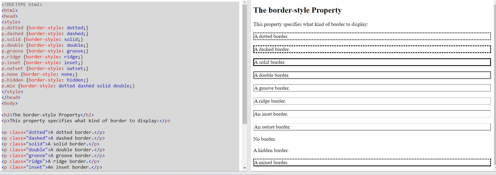
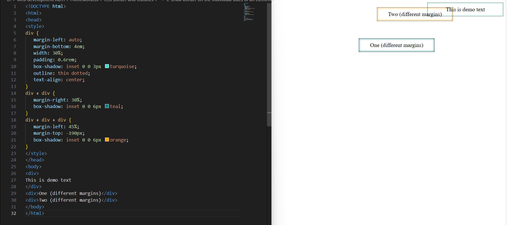
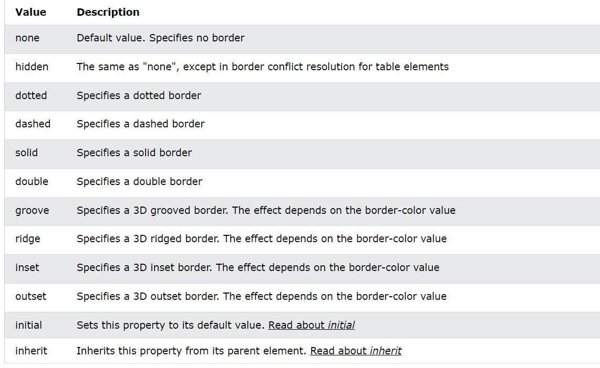
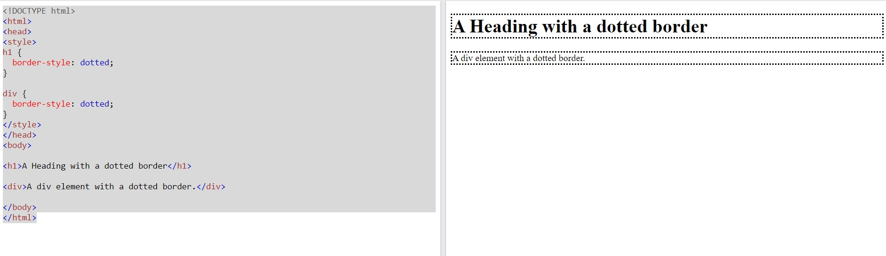
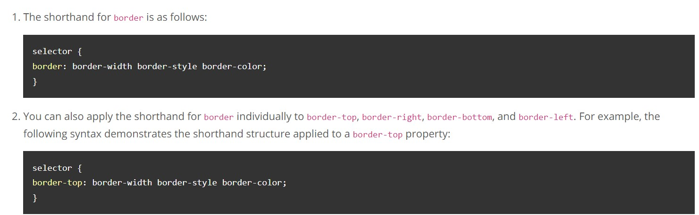
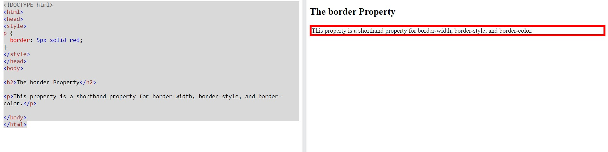
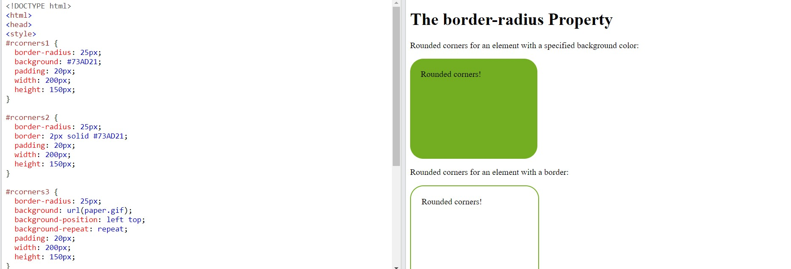
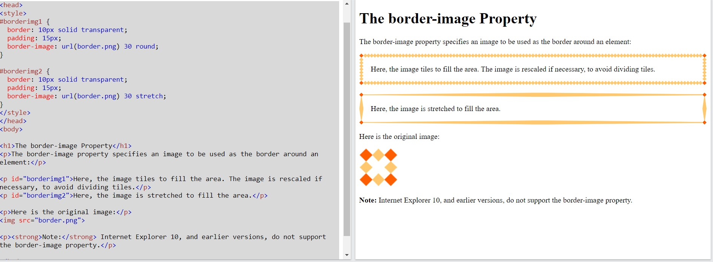
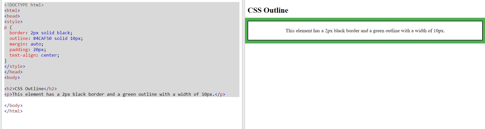

CSS Tables
CSS Border and Outlines
• Draw border around element

• Draw border on the individual sides of an element

• Setting different styles for the borders


• Setting the all border properties at once - The border shorthand property


• Creating the rounded corners around an element

• Using images for creating borders

• Draw outline around element

• Draw border around element without effecting the surrounding elements